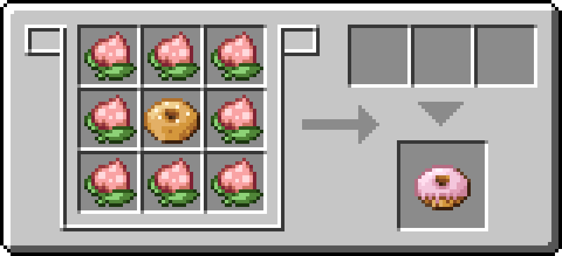
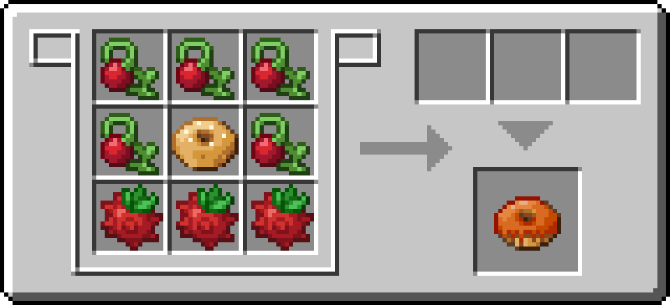
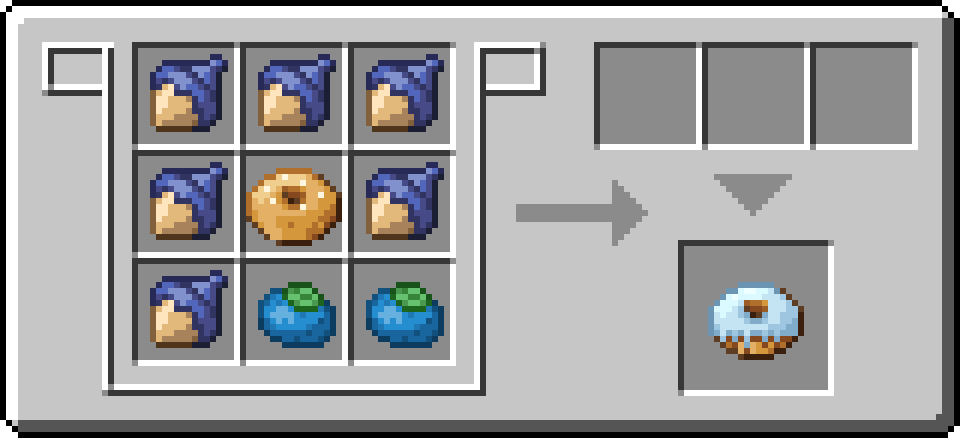
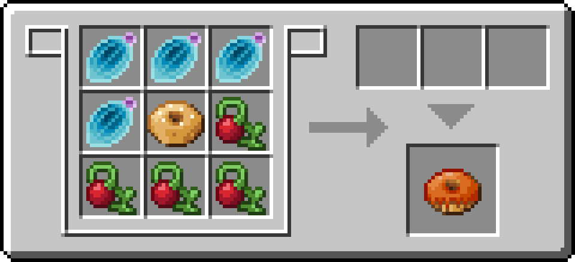
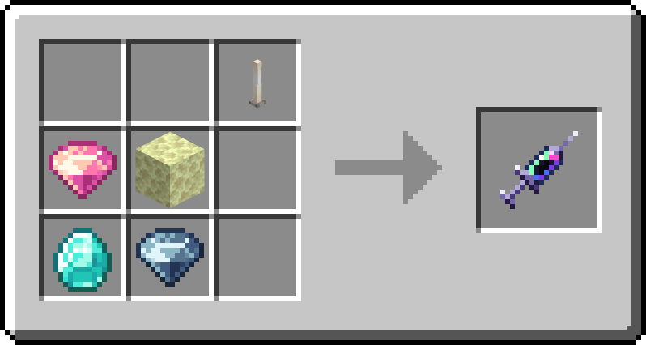

Spatial Distortions¶
Spatial distortions are how you get into Hyperspace, like in Legends: Z-A. They look like glowing holes on a wall.
Where They Appear¶
Distortions only show up in the Overworld, never in the Nether, the End or modded dimensions. They need a wall: a solid face at least 3x3 blocks (a cliff, hillside or building, leaves don't count) with a clear 3x3 space in front of it, on solid dry ground.
They show up 64 to 160 blocks from a player, never within 32 blocks of one. Two distortions are always at least 48 blocks apart.
By default each player has up to 2 within 192 blocks in some areas of the map and 1 in others. Server owners can change it with Max Distortions Per Player in the settings.
They can show up near your base too. If you don't want that, turn on Keep Distortions Away From Bases in the settings.
A distortion lasts 60 minutes of game time before it fades (Distortion Minutes in the settings), and new ones keep showing up as you move around. You can only open each one once. They're saved with the world, so they'll still be there after a restart.
Stars And Types¶
Look at a distortion from within 7 blocks and you'll see its label: "Spatial Distortion", its stars (1 to 5) and its types (1 to 3).
The stars set the trip's wild Pokémon levels, the loot and how fast your donut's time burns. Here's the default chance of each (server owners can change it):
| Stars | Chance |
|---|---|
| 1 | 35% |
| 2 | 28% |
| 3 | 20% |
| 4 | 12% |
| 5 | 5% |
The types decide which Pokémon spawn on the island. A distortion has 1 type 40% of the time, 2 types 40% of the time and 3 types 20% of the time. They come from the biome it showed up in. If the biome has fewer, the rest are random:
| Biome | Types |
|---|---|
| Deep Dark | Ghost, Dark |
| Swamps, bogs, marshes | Poison, Water |
| Oceans | Water |
| Rivers | Water, Normal |
| Beaches | Water, Ground |
| Mushroom Fields | Psychic, Fairy |
| Cherry, flower, meadow, lavender biomes | Fairy, Grass |
| Dark Forest, dead and spooky biomes | Ghost, Dark |
| Jungles | Bug, Grass |
| Deserts, dunes | Ground, Fire |
| Badlands | Ground, Rock |
| Ice, frozen, snowy, tundra biomes | Ice |
| Peaks, slopes, windswept, stony, crags | Rock, Flying |
| Savannas | Normal, Fire |
| Cave biomes | Rock, Steel |
| Forests, taigas | Grass, Bug |
| Anything else | Normal, Grass |
Opening A Distortion¶
You'll need to be within 8 blocks of the distortion (and within 6 blocks up or down). If you're not, you'll get "There isn't a Spatial Distortion nearby...". The mod won't tell you where the nearest one is unless you have a map mod installed.
With Hoopa¶
You can only get Hoopa by beating the Hoopa Unbound event.
- Cook up a donut.
- Send out your Hoopa and right-click it with the donut. You can also right-click with the donut in your hand while Hoopa is in your party or out within 32 blocks.
- Hoopa comes out, eats the donut, charges up and throws its ring at the distortion, which opens into a portal.
- Walk into the portal.








If Hoopa is fainted or in a battle, the portal opens straight away without the scene. Without a Hoopa you'll get "You need a Hoopa with you to feed it a donut here".
The donut decides how long the trip lasts and gives it Flavor Powers. You can learn more about donuts here.
With Distortion Splicers¶
- Craft Distortion Splicers with the recipe below.
- Use the splicers near the distortion. They "splice" it open. That gives you the same kind of portal, but it flickers and isn't stable.
- Walk into the portal.

The Psychic Gem and Dark Gem are Cobblemon's type gems.
You don't need a Hoopa or a donut. Each splice uses one of the splicers' 4 uses. A splice trip has no Flavor Powers. Its time limit is hidden (the action bar shows "Time Remaining: ???") and is a random 90 to 300 seconds.
Warning
If time runs out while you're inside, you get pulled out. You lose half your max health (never below 1 HP) and 35% of each worn armour piece's durability, which can break it. Creative and spectator players aren't hurt. Leaving through the way home is safe.
Each splice has a 5% chance to be the Hoopa Unbound event instead of a normal trip.
The Portal¶
The portal opens on the wall where the distortion was and stays open for 15 seconds, with a "Closes in" timer above it. Whoever opened it goes in first. Everyone who walks in during those 15 seconds goes to the same island and shares the same timer.
Sometimes a distortion won't open:
- "The distortion needs solid ground to open on!" - there's no solid block under the portal spot.
- "Something is in the way of the distortion!" - blocks are in the way of the portal.
- "Hyperspace is full right now, try again soon!" - all 64 Hyperspace islands on the server are in use.
If Hoopa gets refused, you keep the donut.
Maps¶
If you have Xaero's Minimap, Xaero's World Map or JourneyMap installed, distortions show up as small icons on your map in the Overworld. Hover over one on the full map to see its stars and types. The icons are just for finding them. You can't fast travel with them.
Your minimap is hidden on the Ultra Warp Ride and in Ultra Space. You can still open the full map.